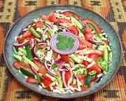

|
Kachumbari SaladEast Africa, Tanzania - Kachumbari | ||||
| Makes: Effort: Sched: DoAhead: |
1-3/4 # ** 1 hr Most |
Kachumbari type salads are very popular in Tanzania and neighboring countries of East Africa. It is served along side rice dishes, roasted bananas, barbecued meats and other dishes. | |||
| The name comes from Kachumber, a Tomato and Cucumber salad in India. This is a good party salad as it won't wilt, but see Comments. | |||||
|
1 8 4 3 1/4 ------- 3 2 1 1 ------- |
# oz oz oz c --- T T t --- |
Tomatoes, ripe Cucumbers (1) Cabbage, green Onion, red Cilantro Leaves -- Dressing Lime Juice Olive Oil ExtV Habanero (2) Salt --------------- |
MAKE - (25 min + cooling time)
|